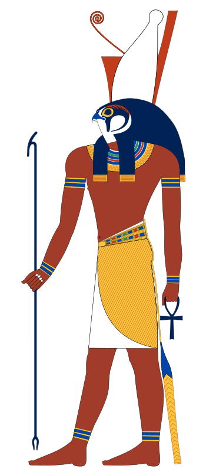

Horus
Appearance:
Horus was a god of the sky. He is probably most well-known as the protector of the ruler of Egypt. The Egyptians believed that the pharaoh was the 'living Horus'. The ancient Egyptians had many different beliefs about the god Horus. One of the most common beliefs was that Horus was the son of Isis and Osiris. After Osiris was murdered by his brother Seth, Horus fought with Seth for the throne of Egypt. In this battle, Horus lost one of his eyes. The eye was restored to him and it became a symbol of protection for the ancient Egyptians. After this battle, Horus was chosen to be the ruler of the world of the living. One of the best-preserved temples in Egypt today was dedicated to Horus. It is located in Upper Egypt at a town called Edfu.
Please note comments won't stay up until they have been processed by the admin, Thank You.